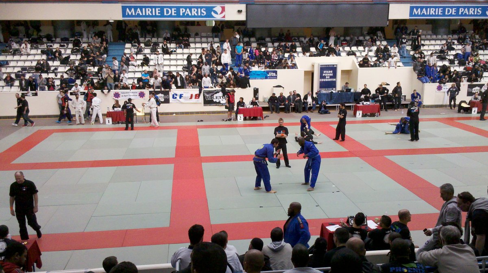
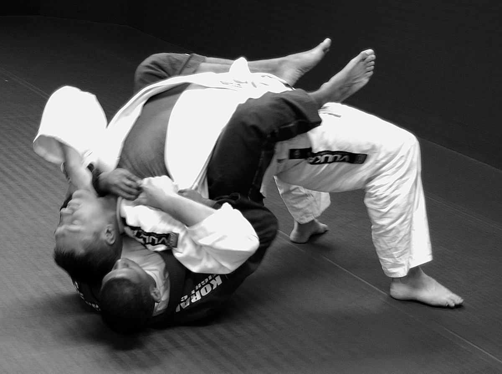
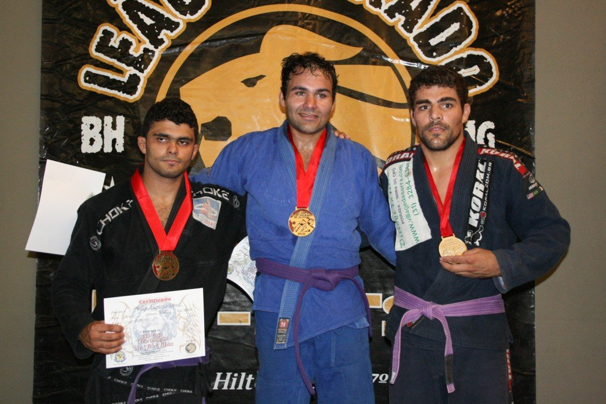
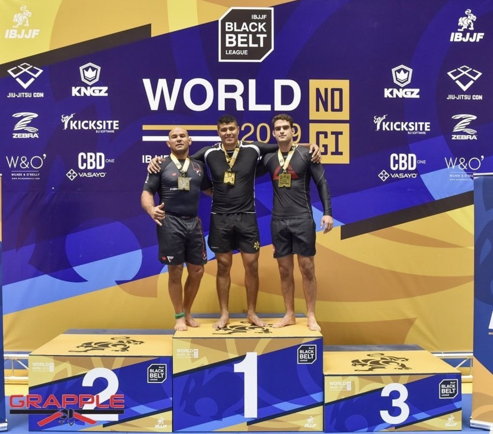
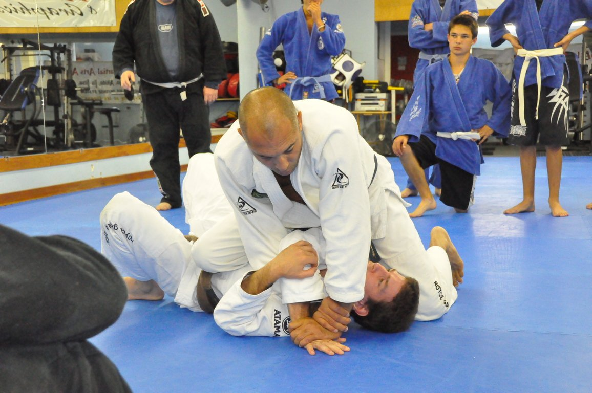
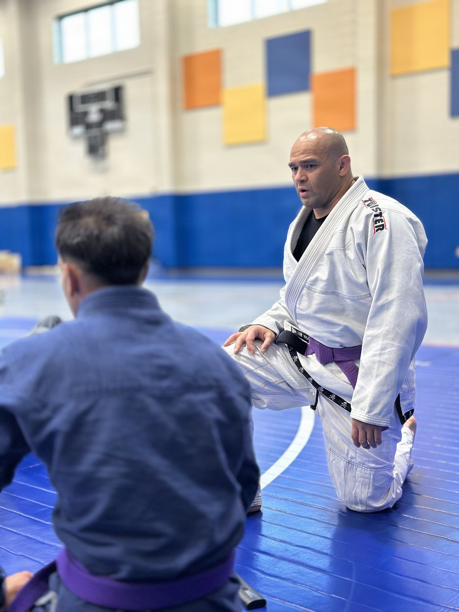

Fala, galera! Você já parou pra pensar que evoluir no jiu-jitsu é que nem aprender um idioma? Dá pra decorar quinhentas frases num aplicativo e ainda travar na primeira conversa de verdade. Quem entende a gramática se vira até sem ter ouvido aquela frase antes.
A semana veio cheia desse tema. Teve atleta virando campeão de MMA na terceira luta com o jiu-jitsu que ele já tinha, mais um soco que há um ano ele achava fraco. Teve academia europeia no topo de um major da IBJJF. E teve campeão pedindo pra parar de colecionar golpe solto, como quem junta peça de quebra-cabeça sem olhar a caixa.
Como sempre, o Estagiário aqui separou o que importa e comentou do ponto de vista de quem treina por hobby, tem trabalho, família e dois ou três treinos na semana quando dá. Bora lá!
1. Tye Ruotolo: campeão de MMA na terceira luta, com o mata-leão de sempre

O que rolou: na sexta-feira, 6 de novembro, no The Inner Circle 37, no estádio Lumpinee, em Bangkok, o Tye Ruotolo finalizou Christian Lee com um mata-leão aos 2min08s do primeiro round e ficou com o cinturão peso-leve de MMA do ONE Championship. Segundo a ONE, o Tye já era o campeão mundial de submission grappling dos meio-médios da promoção e se tornou o primeiro atleta da história do ONE a conquistar títulos mundiais nos dois esportes. Foi só a terceira luta dele no MMA. O Lee, que também é o campeão dos meio-médios de MMA da promoção, começou soltando o jab e o chute baixo. O Tye acertou um chute giratório, depois um gancho de direita e um cruzado de esquerda que derrubou o campeão. Foi pra cem quilos, subiu pra montada, o Lee saiu às pressas, entregou as costas e o mata-leão entrou. O Tye ainda levou um bônus de 100 mil dólares pela performance. Depois da luta, ele contou que passou a semana doente e que queria resolver no primeiro round. Também disse que, há um ano, aquele soco dele era ruim, que ele treinou bastante e que justamente esse soco foi o que derrubou o Lee. Fontes: ONE Championship e BJJDoc.
Cara, três lutas de MMA e já é campeão mundial. Mas repara no detalhe que mais interessa pra gente que treina de terça e quinta: o Tye não inventou um jiu-jitsu novo na hora. Ele derrubou o cara com o soco que passou um ano consertando e finalizou com o mata-leão, o golpe que ele já sabia fazer no escuro. Força e correção andaram juntas. Muita gente faz o contrário: vive caçando o golpe novo do Instagram e deixa a defesa furada e o ataque principal pela metade.
Na prática: escolha UMA coisa que sempre te pega, aquela que o colega usa pra te desmontar todo santo treino, e reserve dez minutos da próxima aula só pra ela. O resto do rola, volta pro seu jogo. Consertar o buraco não é abandonar o que você já faz bem.
2. Europeu sem kimono: ouro duplo, oito finalizações e uma academia da Polônia no topo

O que rolou: o Europeu sem kimono da IBJJF terminou no domingo, 1º de novembro, no PalaPellicone, em Lido di Ostia, perto de Roma, depois de cinco dias de disputa. O polonês Pawel Jaworski, da Academia Gorila, levou ouro no meio-pesado (85,5 kg) e no absoluto, ganhando as oito lutas por finalização. No FloGrappling Show, segundo o BJJDoc, os comentaristas disseram que ele foi atrás de chave de perna em praticamente todo mundo, do mesmo jeito. A colega de academia Martyna Kapuścińska fez o mesmo no feminino: ouro no meio-pesado (71,5 kg) e no absoluto. A Gorila ainda ficou em primeiro nos dois rankings de equipes adultas, com 64 pontos no masculino e 52 no feminino. O BJJDoc descreveu isso como inédito para uma equipe europeia num major da IBJJF. A edição também teve primeiros títulos nacionais de faixa-preta nesse Europeu: Sergio Riquelme (Espanha) no pena, Linus von Schrenk (Alemanha) no pesado e Aleksandre Tevzadze (Geórgia) no ultrapesado. Fontes: BJJDoc, Let's BJJ e BJJ TV.
Pensa comigo: oito lutas, oito finalizações, o mesmo tipo de ataque. Não foi sorte de um dia. Foi um plano que a academia inteira parece compartilhar, a ponto de duas pessoas da mesma equipe saírem com ouro duplo e o time ficar em primeiro nos dois rankings. E isso numa federação que a gente ainda associa, por costume, ao eixo Brasil–Estados Unidos. Espanha, Alemanha e Geórgia subindo no lugar mais alto do pódio na faixa-preta é o esporte crescendo de verdade, não só no mapa.
Pra quem treina por hobby, a lição não é “vá fazer heel hook em todo mundo na terça”. Heel hook é golpe sério, machuca joelho rápido e, em muita academia, nem entra no rola da turma iniciante. A lição é outra: ter UM sistema e repetir ele até ficar chato. Na prática: nesta semana, entre no rola com a mesma pergunta nas duas ou três aulas. “Hoje eu só vou caçar a passagem de joelho.” Ou “hoje eu só vou defender a guarda fechada.” Não troca o objetivo no meio do caminho porque viu o colega acertar outra coisa.
3. Victor Hugo: nove anos depois, 95 segundos, e o recado de saber a hora de parar

O que rolou: no sábado, 7 de novembro, no ONE Fight Night 49, no mesmo Lumpinee de Bangkok, o brasileiro Victor Hugo finalizou o americano Devhonte Johnson com um mata-leão aos 1min35s numa luta de submission grappling sem limite de peso. Os dois faziam a estreia no ONE e fechavam uma trilogia que tinha começado nove anos antes, ainda na faixa roxa: o Hugo venceu no Mundial da IBJJF de 2016 com um triângulo voador, o Johnson empatou o confronto no Europeu de 2017, e agora o Hugo ficou em 2 a 1. Ele chegou em Bangkok depois de um ADCC 2026 pesado: ouro no acima de 99,7 kg (over-220 lb) com quatro finalizações em quatro lutas, e em seguida anunciou aposentadoria do ADCC antes mesmo do absoluto. No FloGrappling Show, ele explicou que quatro lutas daquele jeito pesam no corpo e na cabeça, e que esperar mais umas seis horas pra voltar ao tatame não compensava. Deixou a porta aberta: o próximo ADCC, em 2028, tem rumor de ser no Brasil. Fonte: BJJDoc.
Nove anos entre uma luta e outra. Os dois cresceram, mudaram de faixa, mudaram de regra, e o terceiro capítulo durou menos de dois minutos. Isso serve de consolo pra aquele colega que levou um passeio no primeiro campeonato e ainda carrega a derrota como se fosse sentença. O resultado de 2017 não definiu 2026.
Mas o pedaço que mais me pegou foi a aposentadoria do ADCC. O cara acabou de fazer quatro finalizações, o público quer o absoluto, e ele olhou pro corpo e disse “por hoje chega”. Isso não é fraqueza. É leitura de jogo. Na prática: no próximo treino, se você já fez o rola pesado que tinha combinado e o corpo pediu arrego, não aceite “só mais um” pra provar que aguenta. Ir embora inteiro e voltar na quinta vale mais do que sair carregado e sumir duas semanas.
4. Garry Tonon: pare de decorar golpe solto

O que rolou: no podcast da BJJ Fanatics, Garry Tonon pediu pra galera parar de só memorizar movimento isolado. O argumento dele é direto: você pode acertar cada passo de uma técnica e ainda assim não entender por que ela funciona. Sem princípio, o conhecimento fica numa janela estreita e não transfere quando a posição muda. Com princípio, um detalhe pequeno passa a servir em vários lugares, e fica mais fácil lembrar, porque ninguém dá conta de decorar mil variações. O Tonon apontou o sistema de quatro passos do John Danaher como o melhor mapa pra quem está começando: derrubar, passar as pernas, imobilizar, achar um membro estendido e finalizar. E criticou a aula tradicional em que o aluno recebe três ou cinco “peças do quebra-cabeça” e vai pro rola sem saber onde cada uma se encaixa. Aprender o golpe, pra ele, é o começo, não o fim. Fonte: BJJDoc.
Olha, se isso não descreve a vida de quem treina duas vezes por semana, eu não sei o que descreve. Você chega, vê três técnicas, anota no celular, rola, toma um amasso e na aula seguinte já veio outra sequência. No fim do mês sobra um cemitério de golpes pela metade. Não é culpa sua e nem necessariamente do professor: uma hora de aula não dá pra entregar o quadro inteiro. O Tonon só está dizendo o óbvio que a gente foge: a responsabilidade de ligar as peças também é de quem treina.
Na prática: no fim da próxima aula, escreva UMA frase no celular: “O princípio de hoje foi X.” Por exemplo: “controlar o quadril de perto” ou “tirar a base do pé do parceiro.” No rola seguinte, procure esse mesmo princípio em três posições diferentes, não só na técnica que o professor mostrou. Aí a peça começa a achar o lugar no quebra-cabeça.
5. Ryan Hall: quem acha que treina duro às vezes está se enganando

O que rolou: numa conversa de podcast que repercutiu nesta semana, o faixa-preta e ex-atleta do UFC Ryan Hall foi direto: a maioria das pessoas que acha que treina duro não treina duro, porque não é honesta consigo mesma. Pra ele, trabalho de verdade não é só suar. É pensar, mudar a abordagem, se reavaliar, pedir opinião e, o mais difícil, escutar a crítica em vez de achar desculpa. O Hall disse que o campeonato é o detector de mentira: no dia, todo mundo se preparou pra aquele momento e sobra pouca margem pra se enganar. Ele também cutucou quem já entra com uma desculpa pronta: se ganhar, “eu tenho talento”; se perder, “é que eu não treinei direito.” E completou com um recado que dói: tem gente com 15 anos de tatame que continua ruim, e tem gente com quatro anos que já é bem boa. A diferença não é o tempo no kimono, é a qualidade do que a pessoa fez com esse tempo. Fonte: BJJDoc.
Calma, isso não é convite pra se cobrar como profissional. Ninguém aqui precisa de cinco rounds em Bangkok pra merecer o treino da terça. O ponto do Hall, traduzido pra quem tem trabalho e família, é outro: aparecer na academia não é a mesma coisa que treinar de verdade. Dá pra passar dois anos “treinando” e, se for sincero, admitir que a maior parte desses rolas foi no automático, sem pergunta, sem anotação e sem ouvir o parceiro.
A parte boa é que honestidade cabe na agenda de quem tem pouco tempo. Na prática: no fim do próximo treino, escolha uma pessoa em quem você confia, o professor ou um colega mais experiente, e faça UMA pergunta: “O que eu mais errei hoje?” Anota a resposta. Na aula seguinte, trabalha só aquilo. Se a crítica doer um pouco, parabéns: segundo o Hall, olhar pra dentro com objetividade quase nunca é gostoso. É justamente por isso que funciona.
De olho na agenda
- Hoje, 8 de novembro: The Crown, o torneio de convidados da IBJJF, no Walter Pyramid, em Long Beach, com seis categorias de oito atletas e 20 mil dólares para cada campeão. O card traz a volta de Mica Galvão nos médios, Gabi Pessanha atrás do quarto título, além de Erich Munis, Sarah Galvão e Nolan Stuart. As lutas começam às 10h no horário de Los Angeles (15h em Brasília, 12h no horário de Manitoba). Fontes: MMA Mania e EuroBJJ.
- 13 de novembro: ACBJJ 23, na Farmasi Arena, no Rio, com André Galvão x Rousimar Palhares no combat jiu-jitsu e Rodolfo Vieira x Kelvin Gastelum no grappling. Fonte: BJJDoc.
- 21 de novembro: Polaris 40, em Southampton, com Garry Tonon x Sam McNally pelo cinturão peso-leve. Fonte: Polaris Pro Grappling.
Resumo da ópera
- O Tye venceu com o soco que passou um ano consertando e com o mata-leão que já era dele. Conserta o buraco e aprofunda o que já funciona.
- Oito finalizações e uma academia da Polônia no topo de um major. Ter um sistema e repetir ele rende mais do que colecionar golpe.
- Nove anos depois, a trilogia durou 95 segundos. E saber a hora de parar, como o Hugo no ADCC, também é jiu-jitsu.
- Golpe sem princípio é peça de quebra-cabeça sem a figura da caixa. Escreva o princípio do dia.
- Aparecer no tatame não é a mesma coisa que treinar. Pergunte o que você errou e escute a resposta.
Se tiver aquele colega de treino que vive decorando golpe novo e nunca pergunta o que está errando, manda esse texto pra ele.
Consistência bate talento quando o talento não é consistente.
Nos vemos no tatame. Oss!
Receba o resumo da semana no seu e-mail
Quer receber conteúdo como esse direto no seu e-mail? Entra na newsletter. É pra quem treina de verdade, tem trabalho, família e quer evoluir no tatame sem enrolação. É de graça.